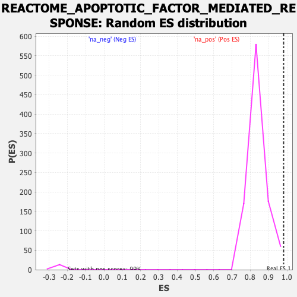

| | | Dataset | logarithmic_genelist.rnk |
| Phenotype | NoPhenotypeAvailable |
| Upregulated in class | na_pos |
| GeneSet | REACTOME_APOPTOTIC_FACTOR_MEDIATED_RESPONSE |
| Enrichment Score (ES) | 0.9817408 |
| Normalized Enrichment Score (NES) | 1.1694591 |
| Nominal p-value | 0.008121828 |
| FDR q-value | 0.16675785 |
| FWER p-Value | 0.924 |
Table: GSEA Results Summary
 Fig 1: Enrichment plot: REACTOME_APOPTOTIC_FACTOR_MEDIATED_RESPONSE
Fig 1: Enrichment plot: REACTOME_APOPTOTIC_FACTOR_MEDIATED_RESPONSE
Profile of the Running ES Score & Positions of GeneSet Members on the Rank Ordered List
| SYMBOL | RANK IN GENE LIST | RANK METRIC SCORE | RUNNING ES | CORE ENRICHMENT | | 1 | CYCS | 169 | 36.868 | 0.4882 | Yes |
| 2 | APIP | 211 | 36.439 | 0.9817 | Yes |
| 3 | UACA | 3597 | 0.000 | 0.6874 | No |
| 4 | XIAP | 4020 | 0.000 | 0.6507 | No |
| 5 | C1QBP | 4414 | 0.000 | 0.6166 | No |
| 6 | CARD8 | 4577 | 0.000 | 0.6025 | No |
| 7 | CASP3 | 4599 | 0.000 | 0.6006 | No |
| 8 | CASP7 | 4602 | 0.000 | 0.6005 | No |
| 9 | CASP9 | 4605 | 0.000 | 0.6003 | No |
| 10 | DIABLO | 5556 | 0.000 | 0.5177 | No |
| 11 | GSDMD | 6854 | 0.000 | 0.4049 | No |
| 12 | APAF1 | 7584 | 0.000 | 0.3415 | No |
| 13 | MAPK1 | 8289 | 0.000 | 0.2803 | No |
| 14 | MAPK3 | 8296 | 0.000 | 0.2798 | No |
| 15 | AVEN | 10686 | 0.000 | 0.0721 | No |
| 16 | BAK1 | 11204 | 0.000 | 0.0271 | No |
| 17 | BAX | 11277 | 0.000 | 0.0209 | No |
Table: GSEA details [plain text format]

Fig 2: REACTOME_APOPTOTIC_FACTOR_MEDIATED_RESPONSE: Random ES distribution
Gene set null distribution of ES for REACTOME_APOPTOTIC_FACTOR_MEDIATED_RESPONSE